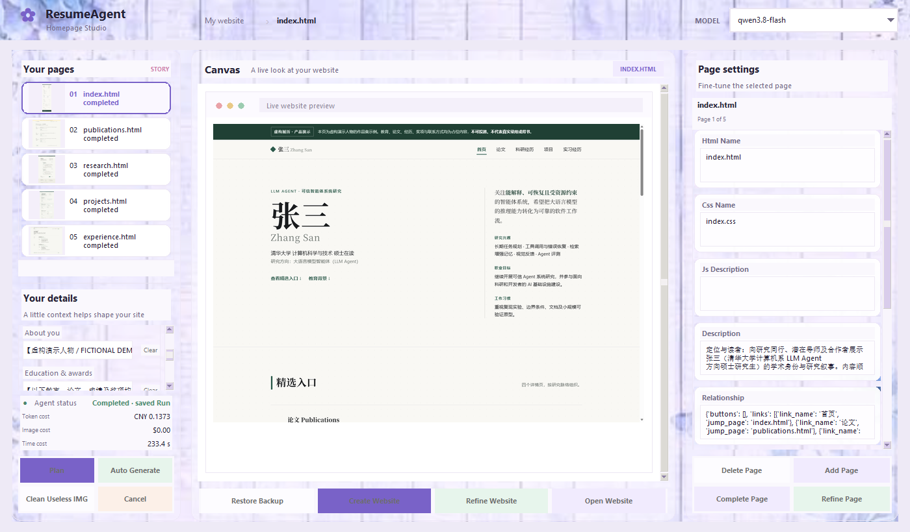
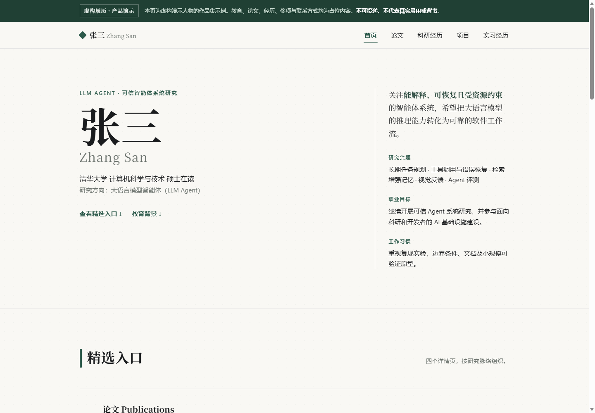
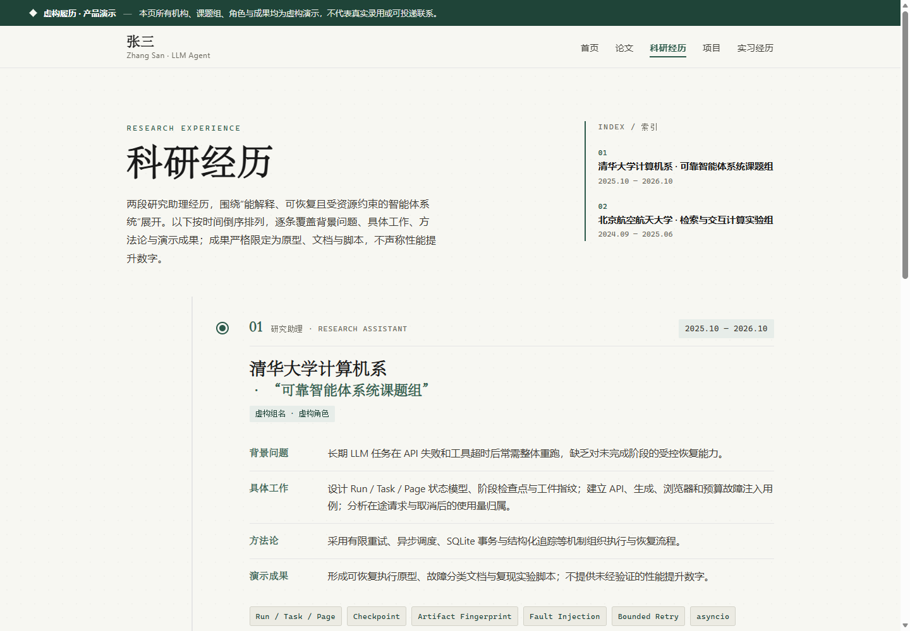
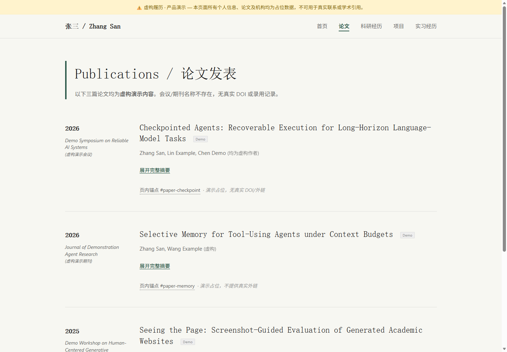
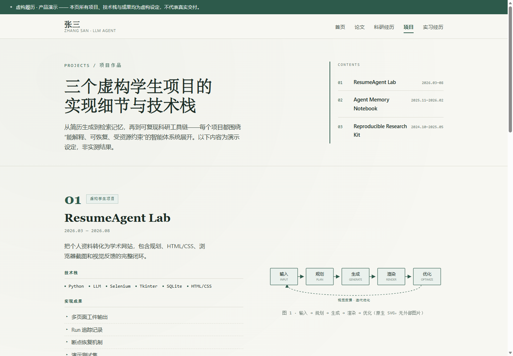
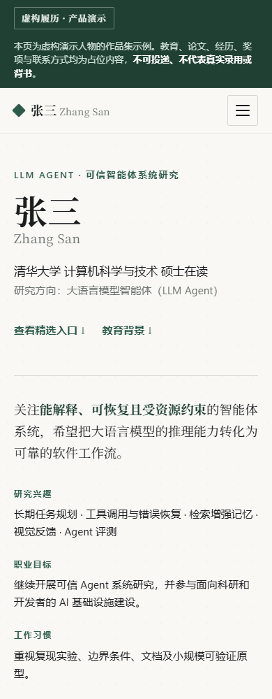

任务重启，进度还在
Run、阶段与页面分别保存状态。恢复时核对产物和检查点，保留已完成页面，仅继续未完成工作。
真实生成 · 可恢复执行
基于多智能体与 Harness Runtime 的个人主页生成系统。
规划多页网站，生成 HTML/CSS，用浏览器截图迭代优化。让 Agent 的每一步，都有状态、有约束、可追踪。
阅读中文 README
01 / 实际演示
从资料输入到五页网站，
也保留失败与恢复的过程。
资料输入 → Qwen 规划 → 五页生成 → Selenium 渲染 → 截图反馈与 Refiner 精修 → 同一 Run 恢复 → 最终网站浏览。视频在原剪辑基础上整体加速至 3 倍，约 73 秒，1920×1080；等待片段经过标注加速与剪辑，原视频无配音，非完全实时录像。
视频与下载链接直接写入页面，无需 JavaScript 或异步数据加载。若网络无法访问 GitHub 视频，请通过原始 Release 下载。
02 / 生成结果
张三是一位用于产品演示的虚构学生。履历、论文与经历均已标注为虚构，不代表真实学术成果。以下复用实际生成文件的浏览器截图，点击图片可放大。





同一份网站，不同的屏幕
五个页面均完成 1440px 桌面端与 390px 移动端复查。项目页经过真实截图反馈精修，随后使用同一 Run 恢复完成。
这些是单次演示的运行结果，不是模型通用能力的排名。HTML 结构通过，也不等同于视觉质量优秀。
查看真实运行与恢复记录 ↗03 / Agent 工作流程
资料、参考与反馈
页面规格与设计语言
并发生成 HTML/CSS
真实渲染与截图
截图评价、按需精修
校验、保存与预览
Harness Runtime 负责顺序、条件分支、重试、取消与最大迭代次数。质量检查由 Refiner 的截图评价与文件校验共同承担，没有独立的 QualityAgent 类。
04 / Harness 架构

05 / 工程能力
Run、阶段与页面分别保存状态。恢复时核对产物和检查点，保留已完成页面，仅继续未完成工作。
有限重试与结构化诊断保留错误线索。真实演示在浏览器会话失效后，恢复同一精修 Run，而非重做五页。
记录 Token 与估算成本，支持成本、超时、迭代和 Run 时限。超限后停止后续执行并保存当前状态。
多页面异步执行，模型请求受信号量限制；共享 Selenium 浏览器由锁保护，避免多个页面同时操作会话。
官方 MCP SDK 通过 stdio 提供 generate_homepage、get_generation_status、preview_homepage，仍由 Runtime 执行。
查询阶段、模型请求、工具操作、用量、耗时与错误元数据。公开演示摘要不包含 API Key、完整提示词或私人日志。
06 / 技术与验证
Python · asyncio · SQLite · Selenium · MCP SDK · Tkinter / Pillow · Qwen
自动化测试
通过
默认跳过真实浏览器
工作流、预算、状态、工具、异常重试与失败恢复；真实 Tk 窗口中的 Mock 工作流，以及官方 MCP 客户端 stdio 调用。Mock 结果不代表真实模型效果。
查看测试范围 ↗五页网站、真实 Selenium 渲染、截图评价、精修及恢复均完成。共 20 次模型请求；依 Token 单价估算约 0.28 元人民币，含失败与重试，不是服务商账单。
查看真实调用记录 ↗本轮仅整理已有产品展示，无新付费模型调用。未进行独立盲评，不提供虚构的视觉质量分数或性能提升百分比。